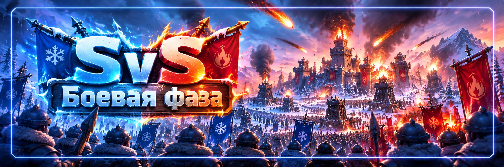

SvS — боевая фаза
Автор: SOVA58
После пяти дней подготовки два государства сражаются за Солнечный замок, башни и личные боевые награды.
⏱️ Как проходит битва
В боевую субботу последовательно проходят межгосударственное PvP → битва за Солнечный замок и четыре башни → продолжение PvP.
В распространённом расписании переходы открываются в 10:00 UTC, замковая часть начинается в 12:00 UTC. Точные часы, продолжительность и условие победы сверяйте в текущем окне SvS. Не переносите правила обычной битвы за замок.
🏆 Где проходит битва
Победитель подготовки атакует государство, проигравшее подготовку. Поэтому подготовка определяет территорию решающего боя, а не только награды.
🏰 Солнечный замок
Задача — захватить и удерживать замок. Если непрерывный контроль не принёс досрочную победу, результат определяется согласно правилам суммарного удержания текущего события.
- Согласованные рейды для захвата.
- Сильный гарнизон для обороны.
- Постоянная замена раненых войск.
- Чёткое выполнение команд.
🔥 Четыре башни
Башни создают давление на гарнизон противника, поэтому не отправляем всех только к замку.
- 🏰 Основная группа — замок.
- 🔥 Отдельные группы — башни.
- 🪖 Резерв — подкрепления и замены.
- ⚔️ Ударные группы — согласованные рейды.
⚔️ Рейды
Руководство заранее назначает лидеров сборов, героев, состав войск, цели и очередность атак. Не открываем собственные сборы без команды. Несогласованные рейды раздробят силы и помешают синхронному штурму.
🦸 Герои и войска
Состав зависит от атаки, защиты, поколения героев и механики сборов. Для участников важны навыки первого героя, влияющие на весь отряд. Джесси, Джассер и Со-Юн подходят для отдельных задач, но универсального состава нет.
Окончательных героев и соотношение войск определяет лидер рейда. Не ориентируемся только на общую мощность.
🪖 Подкрепления
После захвата замка или башни сразу пополняем гарнизон, меняем ослабленные отряды, следим за приближающимися рейдами и оставляем свободные походы для экстренной помощи.
🛡️ Если не участвуете в PvP
Ставьте щит заранее, особенно если будете офлайн. Атакующие действия могут снять защиту. Не открывайте город ради случайного рейда, а после окончания замковой части проверьте, продолжается ли межгосударственное PvP.
🏙️ Перемещения
Перед переходом узнаём назначенную позицию, освобождаем нужные походы, проверяем защиту города и согласуем телепорт. Не тратим телепорты на хаотичные перемещения.
🎯 Личные очки
Очки дают подходящие PvP-сражения и участие в боях за объекты. Не каждая атака города приносит очки: действуют ограничения, в том числе по уровню противника. Сначала проверяем, подходит ли цель.
❤️ Медпункт
Следим за вместимостью и лечим раненых во время боя, используя помощь альянса. Небольшие партии лечения могут быть выгодны при активной помощи союзников. Не отправляем ослабленные отряды в бой без необходимости.
📊 Боевые отчёты
После поражения смотрим составы героев, соотношение войск, характеристики, урон и потери. Не повторяем проигрышную атаку без изменений.
❤️ Восстановление войск
После боя доступно восстановление подходящих потерь. В классической схеме возможно вернуть до 90% таких войск, включая системный возврат, дополнительные возможности и помощь союзников. Это не означает 90% абсолютно всех потерь. Проверяем доступный процент в игре и помогаем товарищам.
💬 Опыт игроков
- Роли распределяем заранее: замок, башни, сборы и резерв.
- Не открываем лишних рейдов: несколько согласованных атак эффективнее множества случайных.
- После захвата сразу пополняем гарнизон.
- Держим свободные походы для экстренной поддержки.
- Лечим во время боя, не только после него.
- Проверяем отчёты и корректируем состав.
- Не воюете — ставьте щит.
- После замка проверяем окончание PvP, прежде чем снимать защиту.
🚫 Частые ошибки
- Путать правила SvS и обычной битвы за замок.
- Атаковать без согласования и игнорировать башни.
- Не пополнять гарнизон после захвата.
- Использовать неподходящих героев и не оставлять резерв.
- Переполнять медпункт и тратить телепорты без плана.
- Оставаться без щита и забывать о восстановлении войск.